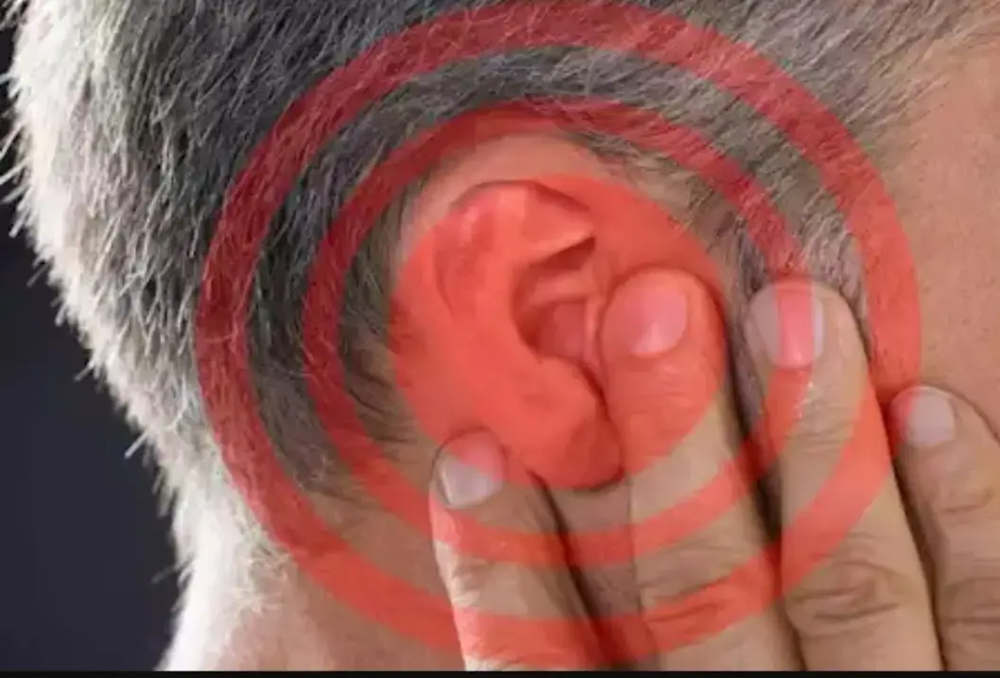

عيادة د. مختار الشرعبي الإستشارية
الإستشارية للأنف والأذن والحنجرة والرأس والعنق،
✍ دكتور/ مختار الشرعبي
طنين الأذن هو إحساس بسماع صوت في إحدى الأذنين أو كلتيهما دون وجود مصدر خارجي لهذا الصوت. قد يكون الصوت على شكل رنين، صفير، طنين، أو أزيز. وهو عرض شائع، وقد يكون مؤقتًا أو دائمًا، خفيفًا أو مزعجًا يؤثر على جودة الحياة.
(نصائح هامة للتغلب عليه)
طنين الأذن تحدٍّ يتطلب صبرًا وتكيّفًا. ركّز على إدارة الأعراض من خلال الدمج بين العلاجات الطبية والتأقلم النفسي. استعن بطبيبك وأخصائي السمع لوضع خطة علاجية مناسبة لك، وتذكر أن التعايش الفعّال مع الطنين ممكن عند اتباع الإرشادات الصحيحة. في عيادة دكتور مختار الشرعبي الإستشارية نوفر أحدث تقنيات تشخيص السمع والمنظار لتحديد السبب بدقة وبدء العلاج المناسب. بإذن الله.

ما هو طنين الأذن؟
🧠 الأسباب الشائعة لطنين الأذن
شائع فوق سن 60 سنة وقد يبدأ في أبكر من ذلك. يحدث بسبب تضرر الخلايا الحسية في الأذن الداخلية.
نتيجة العمل في بيئات صاخبة أو سماعات الأذن بصوت مرتفع لفترات طويلة أو التعرض لصوت قوي كأصوات الإنفجارات. يُسبب تلفًا دائمًا في الشعيرات السمعية الدقيقة.
تراكم الشمع يمكن أن يُسبب ضغطًا على طبلة الأذن ويؤدي إلى الطنين.
- التهاب حاد والذي عادة يسبقه أعراض نزلة برد وغالبًا ما يكون مؤقتًا ثم يزول.
- التهاب مزمن خصوصاً إذا صاحبه إنثقاب لغشاء طبلة الأذن.
يسبب أحيانًا طنينًا في الأذن نتيجة قربه من قناة الأذن.
مثل: بعض المضادات الحيوية (مثل الجنتاميسين)، الأسبرين بجرعات عالية، مدرات البول، مضادات الاكتئاب.
يصاحبه طنين، دوخة، وضعف سمع متذبذب.
التوتر يمكن أن يفاقم الطنين أو يجعله أكثر ملاحظة.
مثل ارتفاع ضغط الدم، ضيق الشرايين، أو وجود تشوهات وعائية، وتكون الأصوات نابضة.
قد تؤثر على الأعصاب السمعية أو الدورة الدموية المغذية للأذن.⏰ متى يجب زيارة الطبيب؟
🔬 كيف يتم التشخيص؟
💊 استراتيجيات العلاج
1. علاج السبب الأساسي (إن وُجد):
2. التعامل مع الطنين (إذا لم يُكتشف سبب):
🛡️ الوقاية
📌 الخلاصة